Discover the most famous bridges
Here is a list:
- Golden Gate Bridge
- London Tower Bridge
- Ura e Mesit
- Bosphor Bridge
Here is a list:
Die Tower Bridge ist als kombinierte Hänge- und Klappbrücke 244 Meter lang, die Höhe der beiden Brückentürme beträgt 65 Meter. Die Fahrbahn zwischen den 61 Meter voneinander entfernten Türmen liegt neun Meter über dem Fluss Themse. Zwei Stege für Fußgänger verlaufen zwischen den beiden Türmen in einer Höhe von 43 Metern über dem Wasser.
 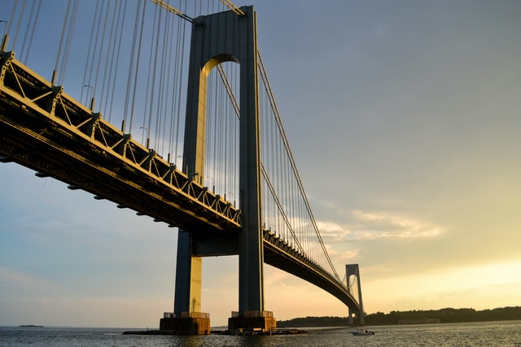
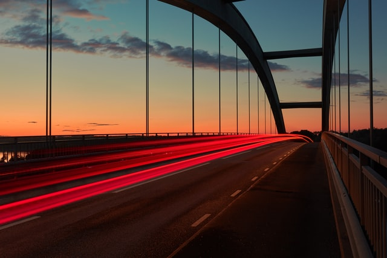
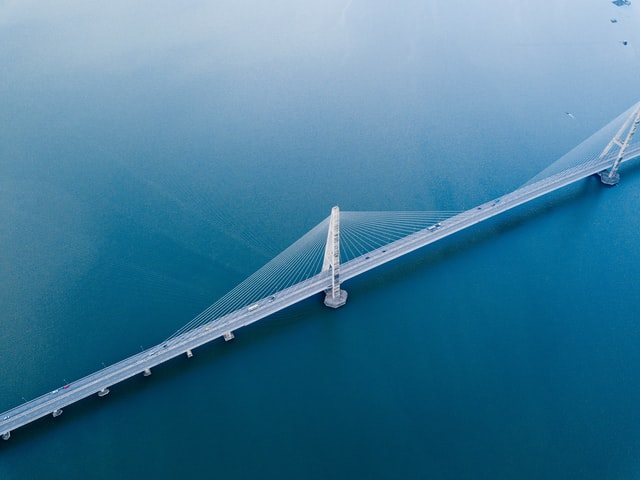
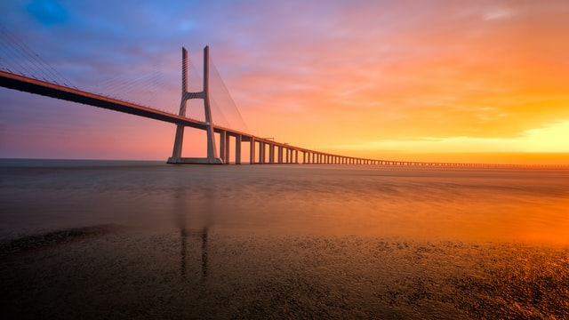
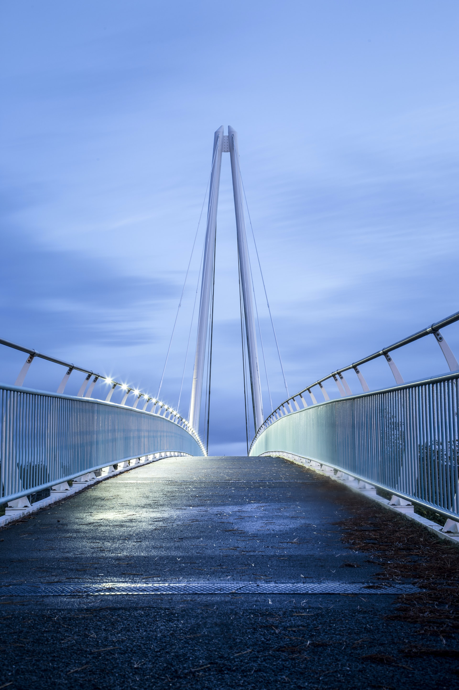
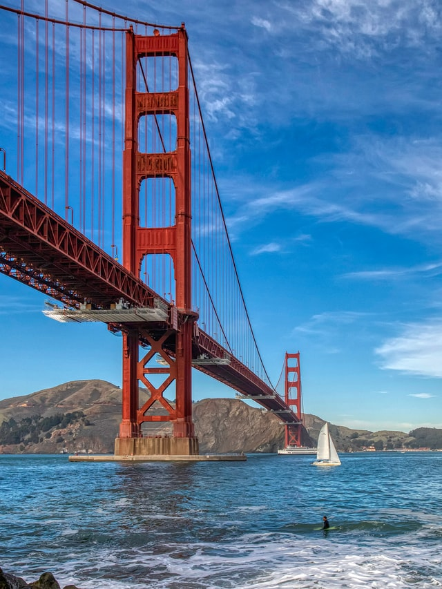
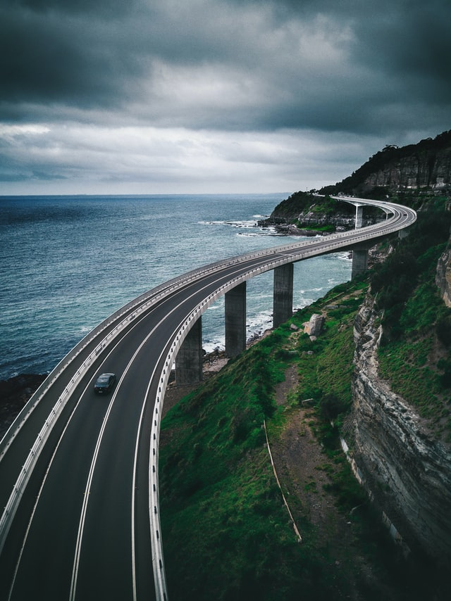
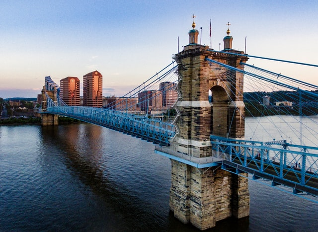
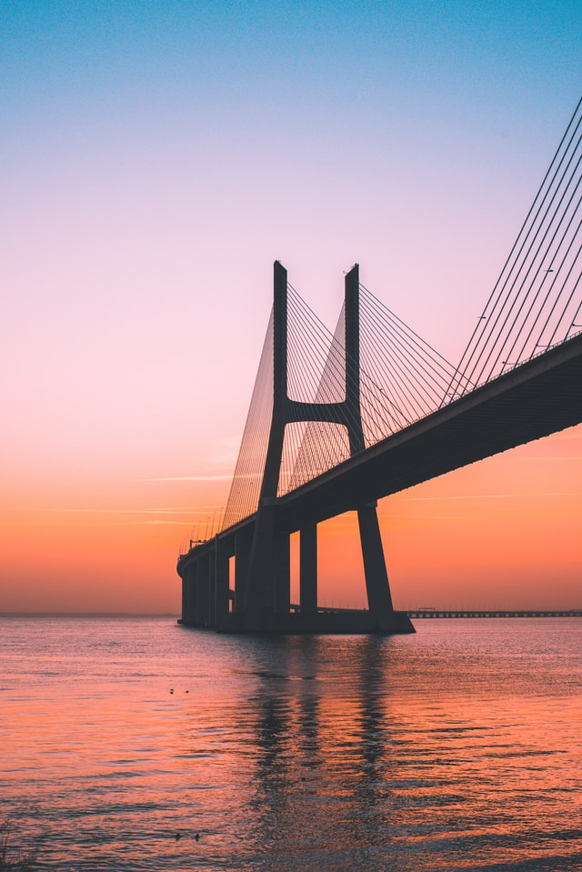
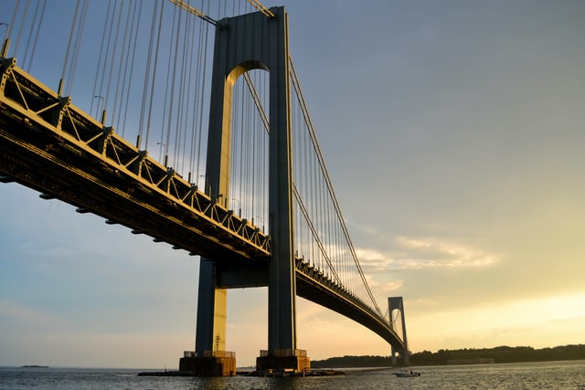
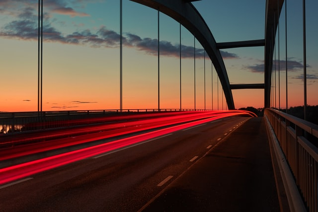
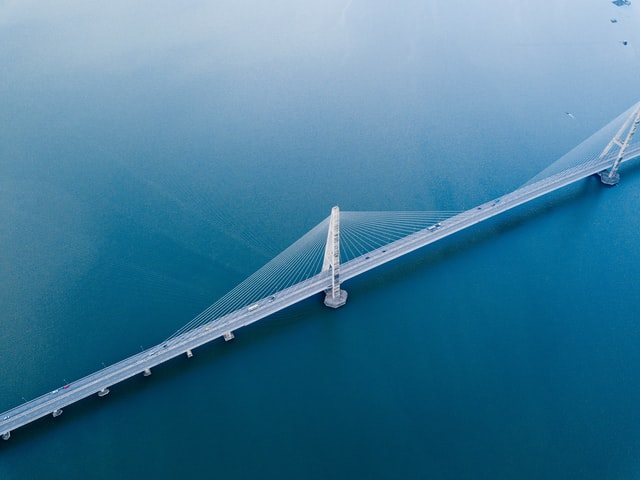
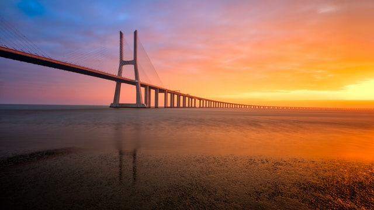
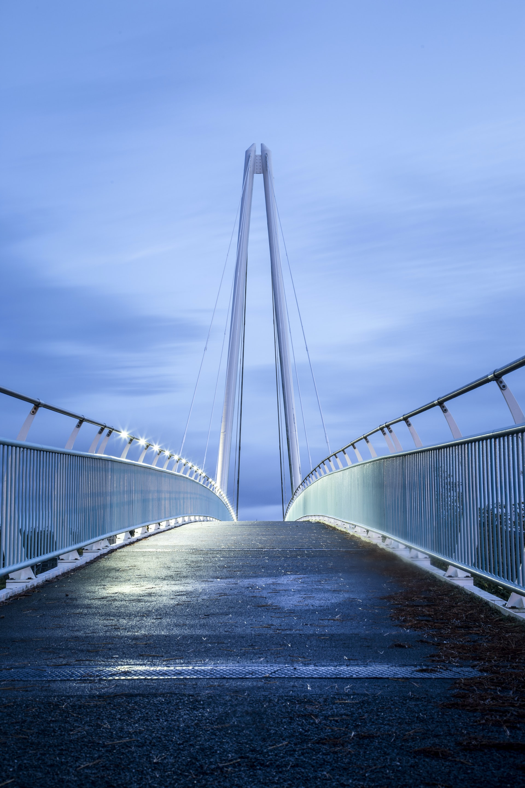
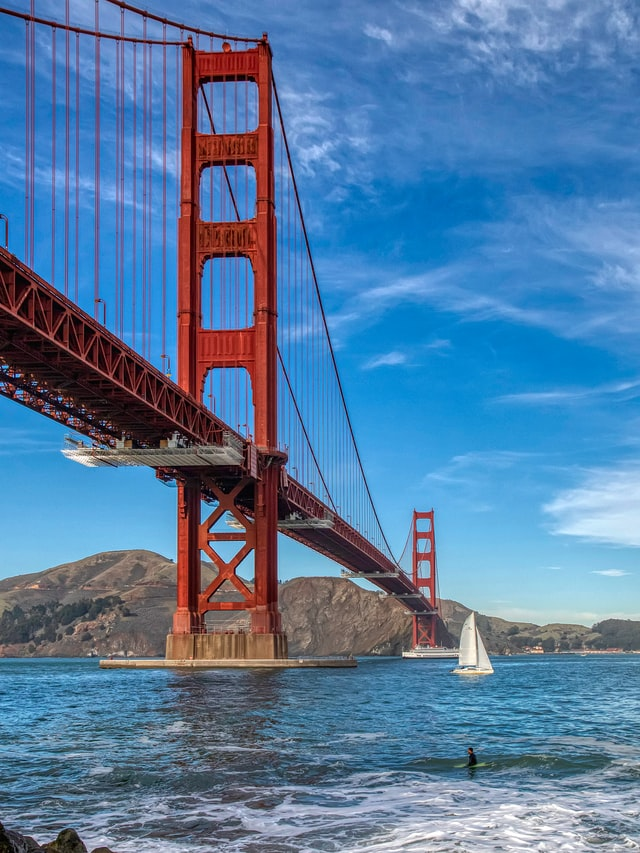
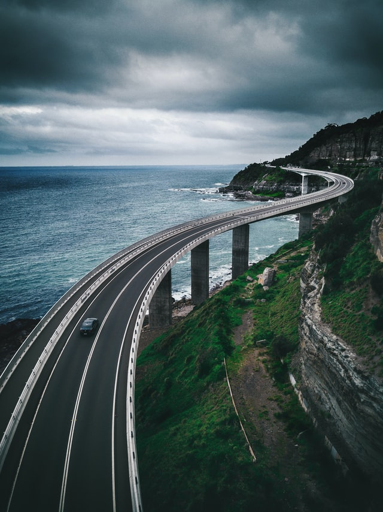
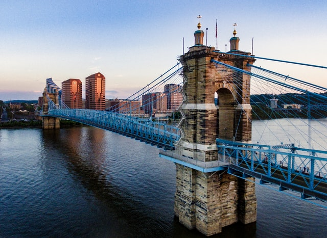
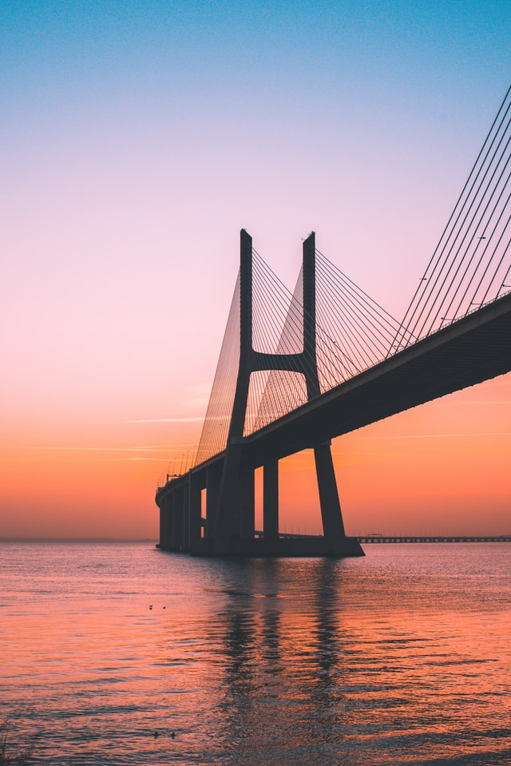